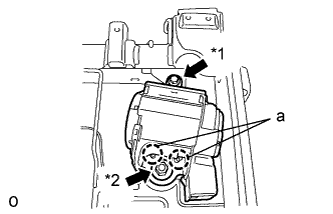
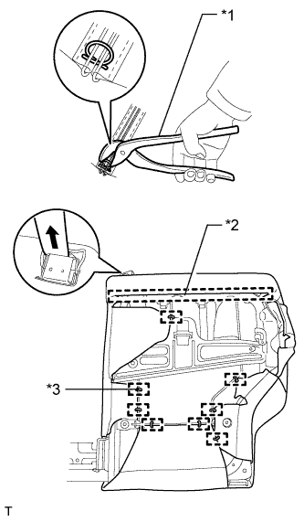
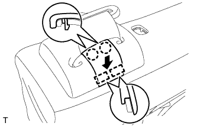
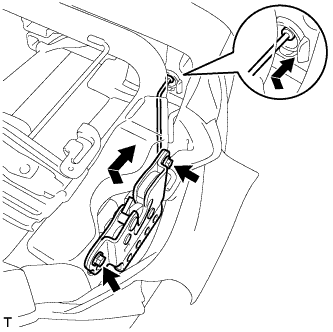
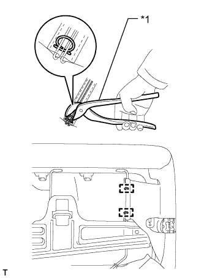
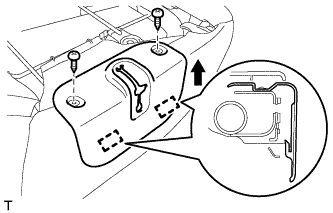

ЦЕНТРАЛЬНЫЙ РЕМЕНЬ БЕЗОПАСНОСТИ ЗАДНЕГО СИДЕНЬЯ В СБОРЕ (для моделей с сиденьем раздельного типа 60/40 с двойным складыванием с правой стороны) > УСТАНОВКА |
| 1. УСТАНОВИТЕ ПРАВЫЙ 3-ТОЧЕЧНЫЙ РЕМЕНЬ БЕЗОПАСНОСТИ СИДЕНЬЯ № 1 В СБОРЕ |
|  |
Совместите захваты с установочными отверстиями ремня безопасности и установите устройство вытяжения ремня безопасности, закрепив его гайкой и болтом, как показано на рисунке.
| *1 | Болт |
| *2 | Гайка |
| 2. УСТАНОВИТЕ НАПРАВЛЯЮЩУЮ ПЛЕЧЕВОГО КРЕПЛЕНИЯ РЕМНЯ ЗАДНЕГО СИДЕНЬЯ |
Введите в зацепление направляющую и захват, чтобы закрепить направляющую ремня.
| 3. УСТАНОВИТЕ КРАЕВОЕ УКРЕПЛЕНИЕ СПИНКИ ЗАДНЕГО СИДЕНЬЯ |
Установите защитный элемент на каркас спинки сиденья.
| 4. УСТАНОВИТЕ ОБИВКУ СПИНКИ СИДЕНЬЯ ВМЕСТЕ С ПОДУШКОЙ |
|  |
Подсоедините ремень безопасности к обивке спинки сиденья с подушкой.
Введите в зацепление крюк.
| *1 | Щипцы для витковых пружин |
| *2 | Крюк |
| *3 | Витковая пружина |
Используя щипцы для витковых пружин, закрепите обивку спинки сиденья с подушкой новыми витковыми пружинами.
| 5. УСТАНОВИТЕ ЗАЩЕЛКУ ЗАМКА ЗАДНЕГО СИДЕНЬЯ |
Установите защелку с помощью торцевого ключа с головкой "TORX" T45.
| 6. УСТАНОВИТЕ КОЛПАЧОК ЗАЩЕЛКИ ЗАМКА СПИНКИ ЗАДНЕГО СИДЕНЬЯ |
Установите колпачок на защелку.
| 7. УСТАНОВИТЕ КРЫШКУ ПЛЕЧЕВОГО КРЕПЛЕНИЯ РЕМНЯ ЗАДНЕГО СИДЕНЬЯ |
Подсоедините ремень безопасности к крышке.
Введите в зацепление 3 захвата, чтобы установить крышку.
Заверните винт.
| 8. УСТАНОВИТЕ КРЫШКУ КРЕПЛЕНИЯ РЕМНЯ БЕЗОПАСНОСТИ |
|  |
Введите в зацепление 2 направляющих и 2 захвата, чтобы закрепить крышку.
| 9. УСТАНОВИТЕ ДЕРЖАТЕЛЬ ПОДГОЛОВНИКА ЗАДНЕГО СИДЕНЬЯ № 1 В СБОРЕ |
Введите в зацепление 4 захвата, чтобы закрепить 2 держателя.
| 10. УСТАНОВИТЕ ИЗОЛИРУЮЩУЮ ВТУЛКУ КНОПКИ ОСТАНОВА СПИНКИ ЗАДНЕГО СИДЕНЬЯ |
Зацепите 3 захвата, чтобы закрепить втулку.
| 11. УСТАНОВИТЕ ЗАМОК СПИНКИ ПРАВОГО ЗАДНЕГО СИДЕНЬЯ В СБОРЕ |
|  |
Перемещая кнопку разблокировки в направлении, указанном на рисунке стрелкой, присоедините ее к втулке.
Закрепите замок спинки сиденья 2 болтами.
|  |
С помощью щипцов для витковых пружин установите 2 новые витковые пружины.
| *1 | Щипцы для витковых пружин |
| 12. УСТАНОВИТЕ КРЫШКУ ЗАМКА СПИНКИ ПРАВОГО ЗАДНЕГО СИДЕНЬЯ |
|  |
Введите в зацепление 2 крепления, чтобы установить обивку.
Заверните 2 винта.
| 13. УСТАНОВИТЕ ОБИВКУ СПИНКИ ЦЕНТРАЛЬНОГО СИДЕНЬЯ № 2 |
Введите в зацепление 2 захвата, чтобы закрепить накладку.
Вверните винт.
| 14. УСТАНОВИТЕ СПИНКУ ЦЕНТРАЛЬНОГО СИДЕНЬЯ В СБОРЕ |
Временно закрепите спинку центрального сиденья 2 болтами, втулкой и болтом "TORX".
Затяните 2 болта.
С помощью торцевого ключа "TORX" T45 затяните болт "TORX".
| 15. УСТАНОВИТЕ ОБИВКУ СПИНКИ ЦЕНТРАЛЬНОГО СИДЕНЬЯ В СБОРЕ |
Введите в зацепление 2 направляющих и закрепите крышку винтом.
| 16. УСТАНОВИТЕ ЗАМОК ЦЕНТРАЛЬНОГО РЕМНЯ БЕЗОПАСНОСТИ ЗАДНЕГО СИДЕНЬЯ В СБОРЕ |
Установите замок ремня безопасности и закрепите его болтом.
Установите ленту.
| 17. УСТАНОВИТЕ ВНУТРЕННЮЮ ОТКИДНУЮ КРЫШКУ ПРАВОГО ЗАДНЕГО СИДЕНЬЯ |
Введите в зацепление 2 направляющих и закрепите крышку винтом.
| 18. УСТАНОВИТЕ ПАНЕЛЬ СПИНКИ СИДЕНЬЯ № 1 В СБОРЕ |
Введите в зацепление направляющую и 3 фиксатора, чтобы закрепить панель.
| 19. УСТАНОВИТЕ ПРАВОЕ ЗАДНЕЕ СИДЕНЬЕ В СБОРЕ |
Установите правое заднее сиденье № 2 в сборе (Нажмите здесь).